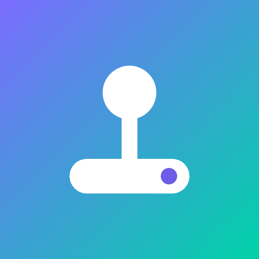

The Arcade app
Every game, your account and your progress in their own window on your Mac or PC. It updates by itself and only takes a few MB.
The app isn't signed with a paid Apple or Microsoft certificate yet, so your computer asks before opening it. It's safe: just allow it once.
- Windows: when SmartScreen says “Windows protected your PC”, click More info, then Run anyway.
- Mac: if it says the app “can't be opened”, open System Settings → Privacy & Security, scroll down and click Open Anyway.
Mac
Mac with Apple Silicon
M1, M2, M3 and M4 chipsFor every Mac from late 2020 onwards. Most Macs people use today have an Apple chip. Not sure? Click the Apple menu → About This Mac: if it says “Chip: Apple M…”, this is yours.
Download for Apple SiliconMac with Intel
Older Macs, mostly from 2020 and beforeFor Macs with an Intel processor. About This Mac says “Processor: … Intel …”. The 3D games run best on macOS 12 Monterey or newer.
Download for Intel MacWindows
Windows (64-bit)
Most Windows PCs and laptopsFor PCs with an Intel or AMD processor, which is almost every Windows computer. Pick this one if you're not sure.
Download for WindowsWindows on ARM
Snapdragon and Surface Pro X laptopsFor Windows laptops with a Qualcomm Snapdragon (ARM) chip, like Copilot+ PCs and the Surface Pro X. Settings → System → About says “ARM-based processor”.
Download for Windows on ARMAfter downloading
On a Mac
- Open the .dmg file.
- Drag The Arcade into Applications.
- Open it from Applications or Launchpad. If macOS warns you, use Open Anyway (see above).
- Log in with your Arcade account and all your progress is there.
On Windows
- Run the setup .exe.
- If SmartScreen appears, click More info → Run anyway.
- Follow the installer. The Arcade goes in your Start menu.
- Log in with your Arcade account and all your progress is there.